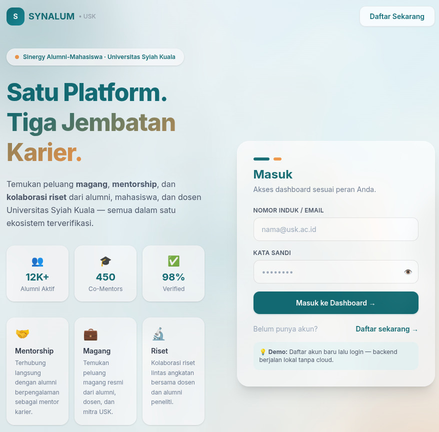

LOADING DEMO PREVIEW
Platform kolaborasi karier kampus yang menghubungkan **Alumni**, **Mahasiswa**, dan **Dosen** Universitas Syiah Kuala melalui tiga pilar utama: Magang, Mentorship, dan Riset.

Status
System Ready
Memecahkan masalah disconnect antara dunia kampus dan karir pasca-kampus.
Berkontribusi kembali ke almamater. Posting lowongan magang, buka program mentorship, dan kelola pendaftar secara langsung.
Jelajahi kesempatan magang, daftar proyek riset, dan bangun portfolio karir sejak dini.
Posting riset atau proyek resmi yang didukung kampus. Temukan asisten peneliti dari kalangan mahasiswa terbaik.
Dibangun dengan arsitektur yang solid, aman, namun sangat mudah dijalankan secara lokal tanpa perlu setting credentials awan.
Frontend kilat dengan routing tersistemati.
Design system dengan custom token.
Backend REST API + JWT Auth.
Auto-create database lokal. Tanpa ribet setting.
Lupakan setup database yang panjang. Cukup npm run dev, dan semuanya jalan bareng: Frontend Vite, Backend Express, dan auto-generasi schema SQLite.
> concurrently "npm run dev:api" "npm run dev:client"
[api] [nodemon] starting `node server.js`
[client] VITE v8.0.0 ready in 350 ms
[api] 📦 SQLite 'synalum.db' verified.
[api] 🚀 Server running on http://localhost:5000
[client] ➜ Local: http://localhost:5173/